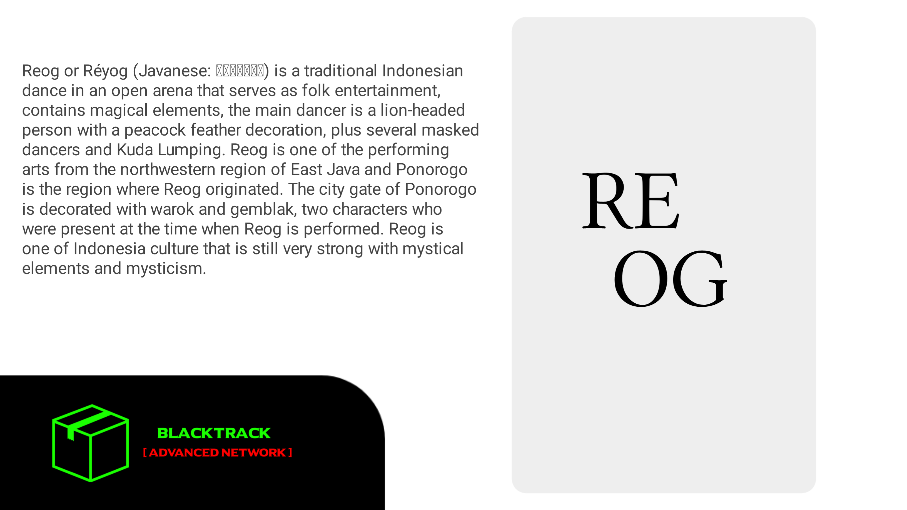

BlalckTrack v3.0a(Reog).
From wikipedia:
Reog or Réyog (Javanese: ꦫꦺꦪꦺꦴꦒ꧀) is a traditional Indonesian dance in an open arena that serves as folk entertainment
contains magical elements, the main dancer is a lion-headed person with a peacock feather decoration,
plus several masked dancers and Kuda Lumping. Reog is one of the performing arts from the northwestern region of East Java and Ponorogo is the region where Reog originated.
The city gate of Ponorogo is decorated with warok and gemblak, two characters who were present at the time when Reog is performed.
Reog is one of Indonesia culture that is still very strong with mystical elements and mysticism.
In 2013, Reog Ponorogo tradition is recognized as National Intangible Cultural Heritage of Indonesia by the Indonesia Ministry of Education and Culture
Changelog
- Change default desktop theme.
- Skipped BlackTrack v2.0b.
- Add some tools.
- Change from arctica-greeter to lightdm-greeter as default.
- Change grub default theme.
Notes: BlackTrack doesn't have a standalone repository yet, so don't use apt-upgrade :), thanks for your time.